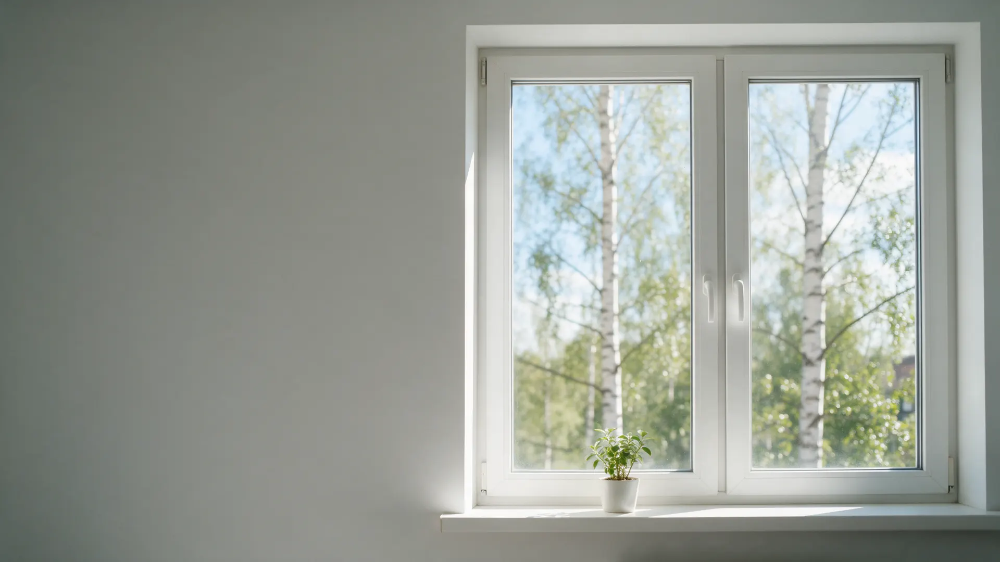
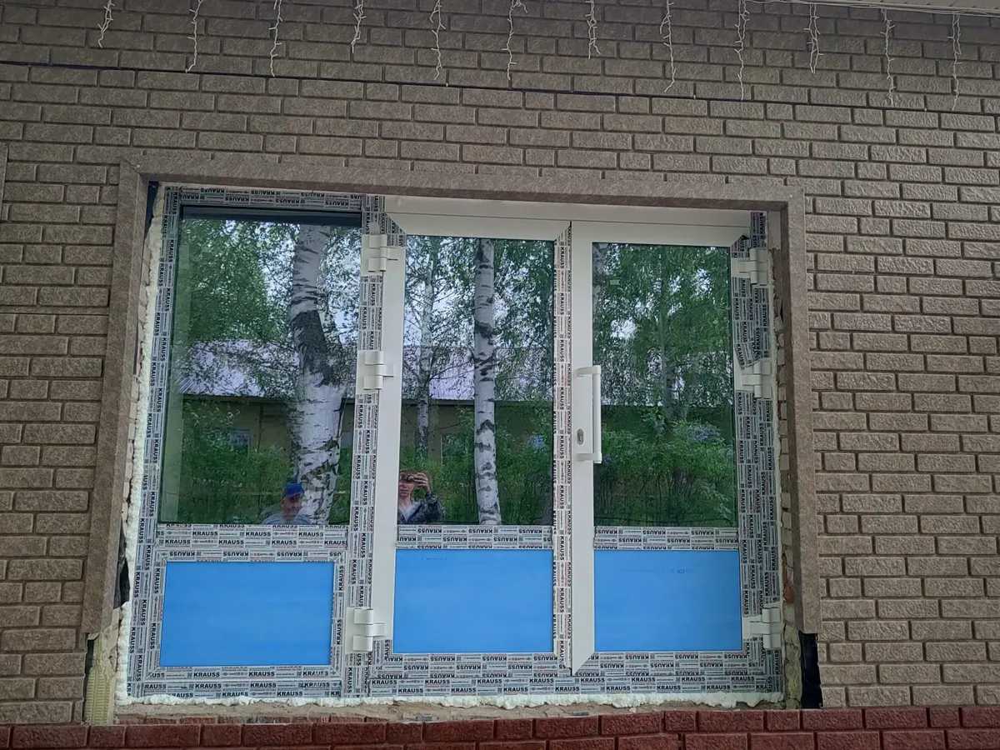
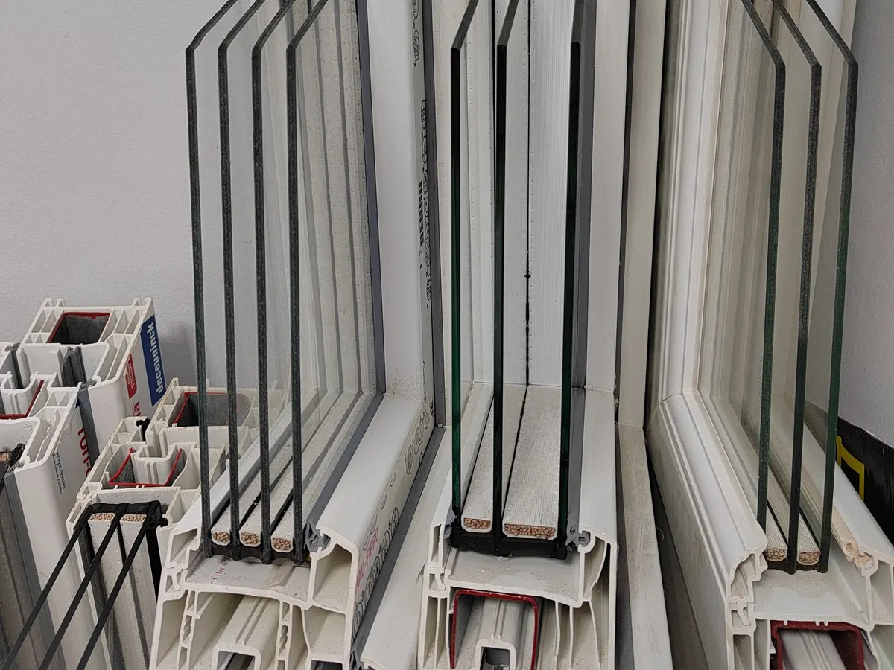
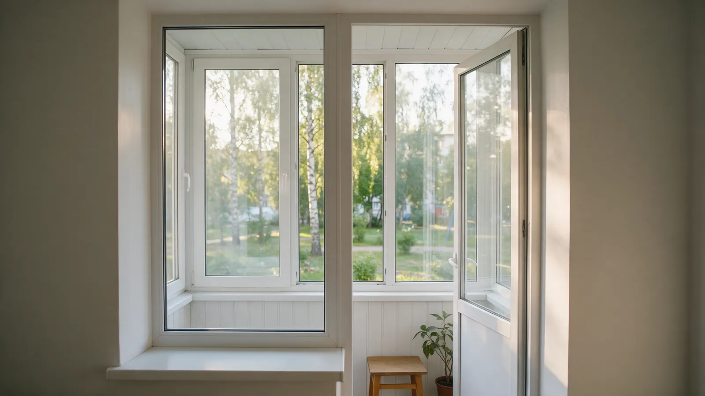

Окна, двери и балконы на Ленина, 19А
Окна, двери и балконы в Глазове: замер, производство и установка
Пластиковые окна и двери, остекление балконов и лоджий, окна под ключ в частном доме, ремонт и регулировка. Клиенты пишут про быстрый монтаж и тёплые окна. Рейтинг 4,1 на Яндекс.Картах.

- Рейтинг 4,1 на Яндекс.Картах, 15 оценок
- Окна, двери, балконы и лоджии, москитные сетки
- Оплата картой, СБП, наличными, есть рассрочка
Цены на услуги
Цены с карточки на Яндекс.Картах: на карточке пометка, что прайс давно не обновлялся. Цены на окна, двери и балконы назовёт замерщик.
Ремонт окон
- Ремонт и регулировка оконзамена фурнитуры и уплотнителей, диагностикаот 500 ₽
- Фурнитураручки, крепежи для сеток, за штуку100 ₽
Новые окна, двери, балконы
- Пластиковые окнауточнить
- Входные и пластиковые двериуточнить
- Остекление балконов и лоджийуточнить
Цены на окна, двери и балконы назовут после замера.
Как заказать
- 01
Записались на замер
По телефону +7 (950) 825-55-22 или через форму на сайте. Запись предварительная.
- 02
Назвали цену
Цену на окна, двери и балконы назовут после замера.
- 03
Заказали
Оплата картой, наличными, СБП, предоплата или рассрочка.
- 04
Установили
Доставка или самовывоз, монтаж мастерами.



Что пишут клиенты
Быстро и чётко
Так пишет клиентка в отзыве.
Тёплые окна
Из отзыва: окна хорошие, тёплые, мастера замечательные.
Консультируют
Клиент пишет: опытные мастера, хорошо консультируют.
Оценка клиентов 4,1
15 оценок и 7 отзывов на Яндекс.Картах.
Отзывы с Яндекс.Карт
«Всё бысро и чётко,по делу. Окна хорошие,тёплые.Мастера замечательные.»
Наталья Макарова · 2 июня
«Заказывали окна на дом, все сделали оперативно, быстро, а самое главное, качественно! Опытные мастера, хорошо консультируют.»
Илья в. · 21 сентября 2022
«Заказывала маскитные сетки. Сделали всё качественно, быстро и аккуратно.»
Юлия М · 31 мая 2022
Отзывы с карточки на Яндекс.Картах, без правок.
Контакты
- Адрес
- Ленина, 19А, офис 110, этаж 1, Глазов
- Часы
- Пн-пт 10:00-19:00, сб-вс выходной
- Телефон
- +7 (950) 825-55-22